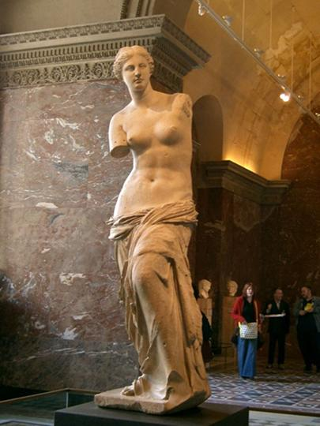
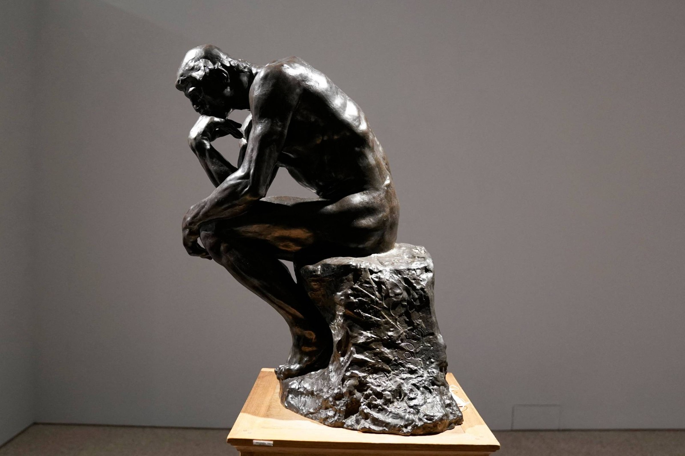
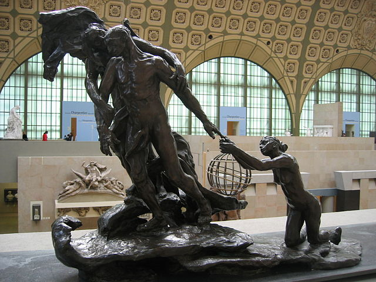
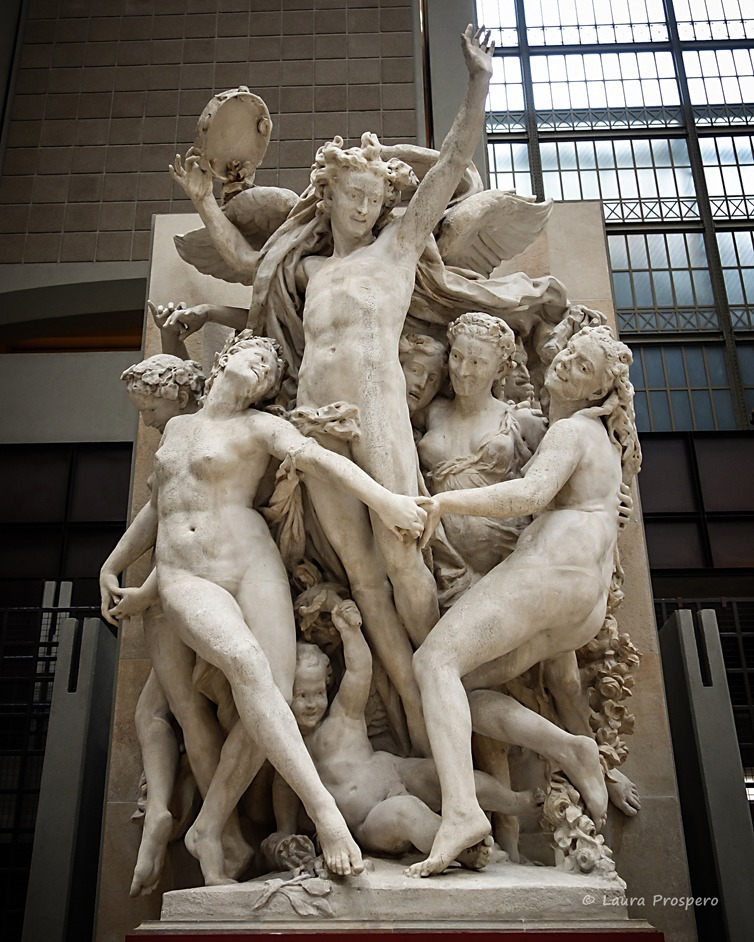

Esculturas Francesas
A França é conhecida por seu papel fundamental na história da escultura, influenciando artistas e movimentos ao longo dos séculos. Desde obras clássicas até as modernas, a escultura francesa captura a beleza, a emoção e a complexidade da expressão humana. Abaixo estão algumas das esculturas e escultores mais icônicos que deixaram sua marca na arte mundial.
Esculturas Famosas
Vitória de Samotrácia

Conhecida como a Vitória Alada de Samotrácia, essa escultura representa a deusa grega Nice, símbolo da vitória. A obra, que data de cerca de 190 a.C., foi descoberta na ilha de Samotrácia e é uma das mais famosas do Museu do Louvre. Sua postura dinâmica e asas abertas capturam uma sensação de movimento e força, tornando-a um ícone da escultura helenística.
Vênus de Milo
A Vênus de Milo, outra obra-prima do Louvre, é uma estátua de mármore que representa Afrodite, a deusa grega do amor e da beleza. Datada de cerca de 130 a.C., a escultura é famosa por sua beleza idealizada e pelos braços perdidos, que adicionam um ar de mistério à obra.
Escultores e Suas Contribuições
Auguste Rodin
Considerado o "pai da escultura moderna", Auguste Rodin revolucionou a escultura com sua abordagem expressiva e detalhada da figura humana. Entre suas obras mais famosas estão O Pensador, O Beijo e Os Burgueses de Calais. Rodin capturou emoções e expressões profundas, trazendo uma nova dimensão de realismo e humanidade à escultura.
Camille Claudel
Camille Claudel, discípula e parceira de Rodin, foi uma escultora talentosa que trouxe sensibilidade e emoção únicas às suas obras. Sua peça A Idade Madura é uma das mais conhecidas, explorando temas de amor e perda. Claudel enfrentou muitos desafios pessoais e profissionais, mas seu talento e contribuição para a escultura francesa são amplamente reconhecidos hoje.
Jean-Baptiste Carpeaux
Jean-Baptiste Carpeaux foi um escultor do século XIX conhecido por sua obra La Danse, que adorna a fachada da Ópera de Paris. Carpeaux combinava o realismo com um senso de movimento e emoção, destacando-se entre seus contemporâneos. Sua habilidade em capturar expressões faciais detalhadas e poses dinâmicas fez dele um dos escultores mais importantes de sua época.
Influência da Escultura Francesa
A escultura francesa influenciou profundamente o mundo da arte, estabelecendo padrões de beleza e técnica que ressoaram por séculos. Museus como o Louvre e o Musée d'Orsay abrigam essas e outras obras-primas, atraindo milhões de visitantes interessados na história e na estética da escultura. Através de artistas como Rodin e Claudel, a França continua a ser um ponto de referência para a arte da escultura.